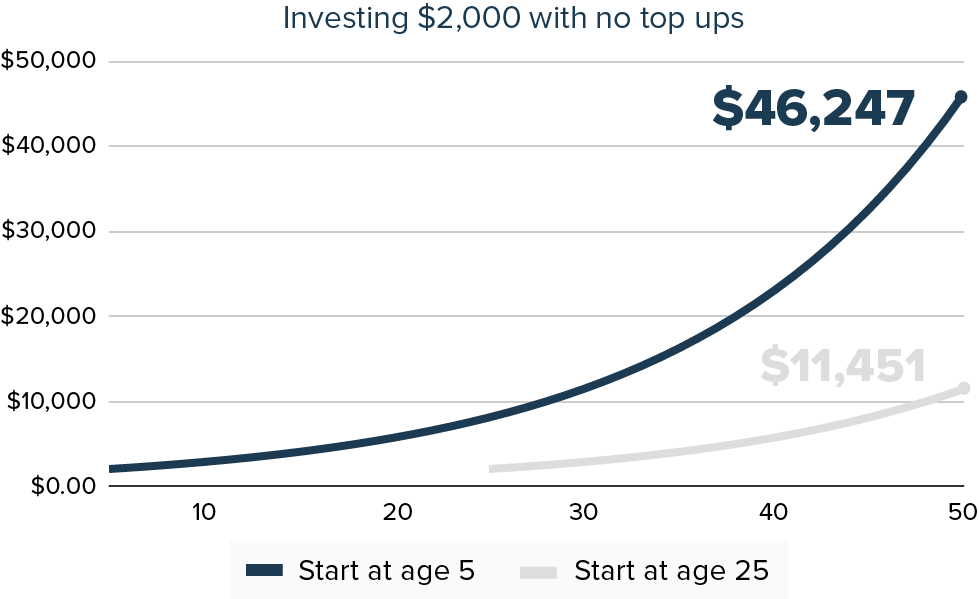
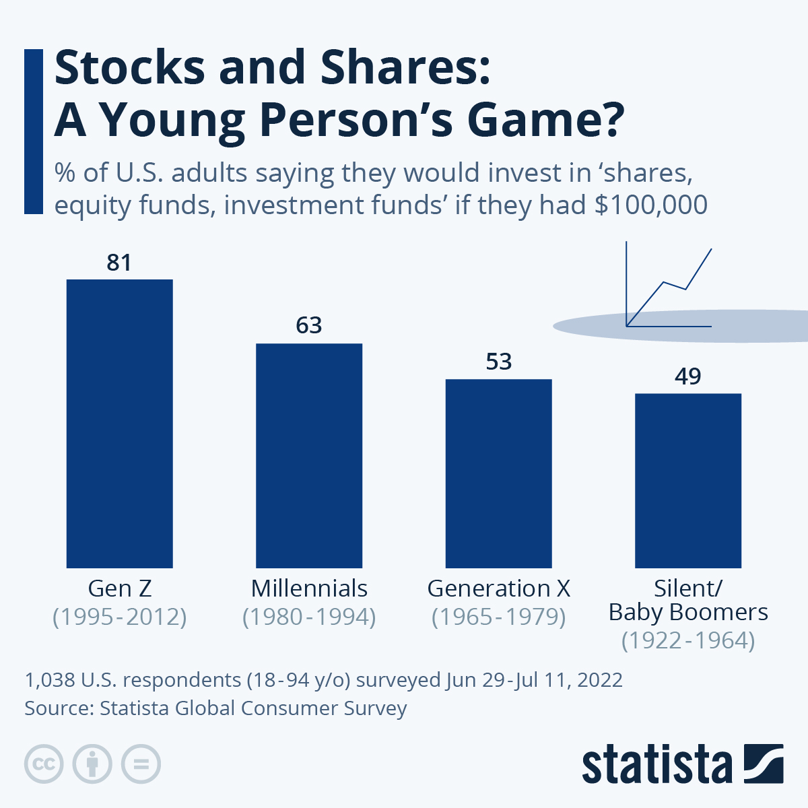
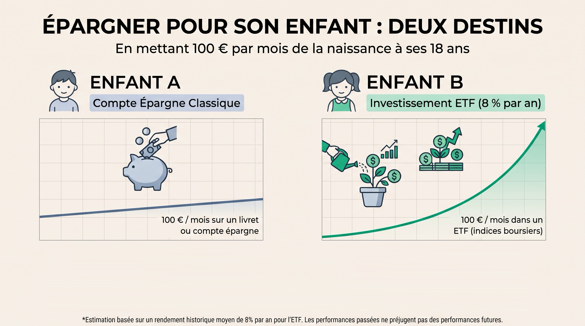
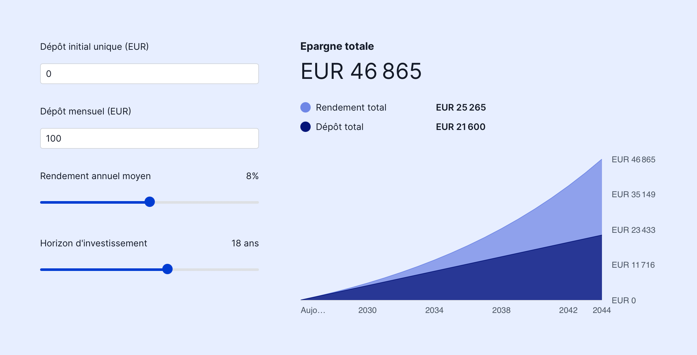
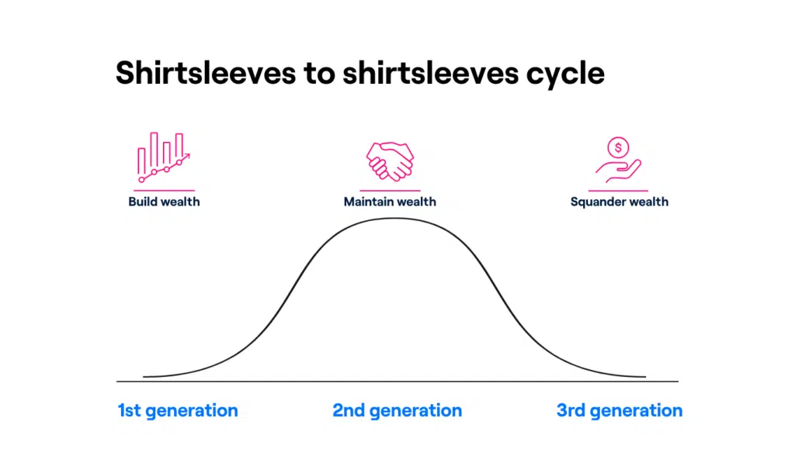

L'investissement en Bourse est trop souvent perçu comme une démarche purement individuelle, centrée sur sa propre retraite ou ses projets personnels. Pourtant, lorsque l'on maîtrise la mécanique des intérêts composés, on comprend rapidement que le véritable super-pouvoir de la Bourse s'exprime à l'échelle intergénérationnelle. Construire un patrimoine financier de qualité, c'est poser la première pierre d'une véritable dynastie familiale, capable de mettre vos enfants à l'abri du besoin et de leur offrir une liberté de choix inestimable dès leur entrée dans la vie adulte.
Dans ce chapitre, nous allons d'abord mesurer mathématiquement l'impact colossal d'un investissement démarré dès la naissance d'un enfant, avant de synthétiser de manière claire et concrète les règles de transmission et de succession d'un Compte-Titres Ordinaire (CTO) en Belgique et en France.
1. L'Expérience de Pensée : Et si mes parents avaient investi à ma naissance ?
Pour illustrer la puissance brute du temps sur les marchés financiers, rien ne vaut un cas réel basé sur des données historiques vérifiables. Je suis né le 12 août 2003. Posons-nous une question simple : que se serait-il passé si mes parents avaient pris la décision d'investir 100 € par mois dans le S&P 500 dès le jour de ma naissance, et ce jusqu'à ma majorité le 12 août 2021 ?
Notez bien que cette période de 18 ans (août 2003 – août 2021) n'a rien d'un long fleuve tranquille : elle inclut la terrible crise financière des subprimes de 2008 (où le marché a chuté de près de 50 %), la crise de la dette souveraine européenne en 2011, ainsi que le krach mondial fulgurant lié à la pandémie de Covid-19 en mars 2020. Pourtant, en prenant comme référence la performance historique réelle du S&P 500 sur cette période exacte avec les dividendes réinvestis (Total Return), le rendement annualisé moyen s'est élevé à un impressionnant 10,869 % par an.

Sur cette base historique précise, voici le bilan mathématique d'un versement programmé (DCA) de 100 € chaque mois pendant 18 ans (soit 216 mois) :
- Effort d'épargne total versé par mes parents : 21 600 € (100 € × 216 mois).
- Gains générés par la performance boursière et les intérêts composés : +41 002 €.
- Valeur finale du portefeuille le jour de mes 18 ans : 62 602 €.
Autrement dit, pour un effort d'épargne étalé de 21 600 €, j'aurais démarré ma vie d'adulte avec un patrimoine financier de plus de 62 600 €, soit près de trois fois la mise initiale ! C'est la démonstration la plus pure des intérêts composés : le capital investi génère des rendements qui, une fois réinvestis, génèrent eux-mêmes de nouveaux rendements année après année. Et plus l'horizon d'investissement s'allonge, plus cette courbe devient exponentielle.
À titre de comparaison personnelle, j'ai eu la grande chance de commencer ma vie active avec un compte épargne d'environ 4 000 € constitué par mes parents. Soyons très clairs : démarrer à 18 ans avec 4 000 € de côté et sans dettes est déjà un privilège immense ! Beaucoup de jeunes commencent dans la vie avec beaucoup moins, voire avec rien du tout, et je suis profondément reconnaissant envers mes parents pour les sacrifices qu'ils ont consentis afin de m'offrir ce tremplin.
S'il y avait néanmoins un seul regret financier à formuler avec le recul, ce serait que cet argent ait simplement dormi sur un livret bancaire traditionnel pendant près de deux décennies. Cet argent a été mis de côté avec les meilleures intentions du monde, mais sans jamais être mis au travail : il n'a généré aucun rendement réel et a subi de plein fouet l'érosion silencieuse de l'inflation, perdant année après année une fraction de son pouvoir d'achat. Bien entendu, ce n'est en aucun cas un reproche à adresser à nos parents : au début des années 2000, l'investissement en Bourse était infiniment moins démocratisé qu'aujourd'hui, les frais bancaires étaient prohibitifs, l'information financière était opaque et les ETF étaient quasiment inconnus du grand public.
2. Le Facteur Temps : L'Avantage Injuste de l'Enfance
Cette simulation met en lumière une loi cardinale que nous avons déjà croisée tout au long de cette formation : dans l'équation des intérêts composés, le temps (l'exposant) est la variable la plus puissante, bien devant le montant investi ou le taux de rendement.

Regardez l'écart vertigineux sur le graphique ci-dessus : en investissant une somme unique de 2 000 $ à l'âge de 5 ans plutôt qu'à 25 ans, le capital final à 50 ans est multiplié par quatre (46 247 $ contre 11 451 $), uniquement grâce aux 20 années supplémentaires de capitalisation silencieuse ! Commencer dès le berceau permet d'amorcer la boule de neige immédiatement.
Pour ma part, j'ai eu la chance d'avoir ce déclic financier dès mes 18 ans, en janvier 2022. En démarrant au seuil de ma vie d'adulte, j'ai immédiatement mis le temps de mon côté avec une vision très claire : je n'investis pas uniquement pour être riche dans un fauteuil roulant à 65 ans, mais pour pouvoir accompagner et financer les grands caps de ma vie (mariage, achat immobilier, voyages, liberté professionnelle) tout en laissant le cœur de mon portefeuille croître sur le très long terme.

Heureusement, les mentalités évoluent à grande vitesse. Grâce à la démocratisation des courtiers en ligne et à l'accès gratuit à l'éducation financière, les nouvelles générations ont enfin compris l'urgence de faire travailler leur argent pour ne plus subir l'inflation ni dépendre d'un système de retraite par répartition à bout de souffle.
🎯 Mon engagement personnel pour mes futurs enfants
Fort de ce constat, j'ai pris une résolution ferme pour l'avenir : pour chaque enfant que j'aurai, je lui ouvrirai un Compte-Titres dès sa naissance et j'y investirai 100 € par mois sur un ETF capitalisant (afin de réinvestir automatiquement les dividendes sans subir la moindre frottement fiscal en cours de route). J'ai aujourd'hui 23 ans, ce qui me laisse encore tout le temps de me concentrer pleinement sur la croissance de mon propre portefeuille avant de fonder une famille, mais la stratégie est déjà arrêtée.
Cependant, remettre un chèque de 50 000 € ou 60 000 € à un jeune de 18 ans qui n'a aucune éducation financière serait une erreur monumentale : il risquerait de tout dilapider en quelques mois dans des biens de consommation futiles ou une voiture hors de prix. C'est pourquoi j'imposerai une condition non négociable avant de leur débloquer l'accès à ce capital : ils devront suivre un véritable cours sur la gestion de l'argent, la valeur du travail et l'investissement à long terme — et pourquoi pas lire intégralement cette formation StocksPickeur et réussir tous les quiz ! Transmettre un patrimoine sans transmettre le savoir qui permet de le préserver est inutile ; il faut léguer les deux.
3. Le Choc des Deux Destins : Enfant A vs Enfant B
Pour ancrer définitivement cette réalité dans votre esprit avec des hypothèses prudentes et conservatrices, comparons le destin financier de deux enfants nés le même jour, dont les parents fournissent exactement le même effort d'épargne mensuel de 100 € pendant 18 ans (soit 216 mois = 21 600 € versés au total) :
- L'Enfant A : Ses parents placent religieusement 100 € par mois sur un compte épargne bancaire classique non rémunéré (ou dont le maigre taux d'intérêt est annulé par les frais et l'inflation).
- L'Enfant B : Ses parents investissent ces mêmes 100 € par mois de manière automatisée sur un ETF indiciel mondial ou américain logé sur un Compte-Titres, avec un rendement annuel moyen prudent de 8 % par an.

À l'aube de ses 18 ans, l'Enfant A dispose de 21 600 €. Encore une fois, c'est déjà un très beau cadeau que la majorité des jeunes aimeraient recevoir. Mais en réalité, après 18 années d'inflation cumulée à 2 % ou 3 % par an, ces 21 600 € ont perdu près d'un tiers de leur pouvoir d'achat réel.
Regardons maintenant ce que découvre l'Enfant B le jour de son dix-huitième anniversaire grâce à l'intelligence financière de ses parents :

Sans que ses parents n'aient sorti un seul euro de plus de leur poche que ceux de l'Enfant A, l'Enfant B se retrouve à la tête d'un capital de 46 865 €, soit plus du double ! Les 25 265 € d'écart proviennent exclusivement du travail silencieux des intérêts composés à 8 % par an. Et si l'Enfant B, bien éduqué financièrement, décide de ne pas toucher à cette somme à ses 18 ans et la laisse simplement fructifier sans même rajouter un centime, ce capital dépassera les 200 000 € à ses 38 ans !
Les 3 règles d'or pour l'avenir de vos enfants 💡
- Épargner méthodiquement : Mettez une somme fixe de côté chaque mois pour votre enfant (même 50 € ou 100 €).
- Investir au lieu de laisser dormir : Fuyez les livrets bancaires sur un horizon de 18 ans et placez cette épargne sur un ETF capitalisant mondial ou américain.
- Commencer dès le premier jour : Ouvrez le compte dès la naissance pour offrir 18 années complètes d'intérêts composés à votre enfant.
📉 Le syndrome "Shirtsleeves to Shirtsleeves" (De la chemise à la chemise)
Il existe un proverbe universel à Wall Street (que l'on retrouve également en Asie sous la forme "De la rizière à la rizière en 3 générations") : "Le grand-père crée la fortune, le père en profite, et le petit-fils détruit tout."

Les études démontrent que 70 % des patrimoines fondent dès la deuxième génération, et 90 % sont anéantis à la troisième. Pourquoi un tel désastre ? Parce que l'enfant hérite du résultat (l'argent) mais pas du processus (la discipline, le travail, la compréhension de l'effet composé). Remettre un chèque de 60 000 € à un jeune de 18 ans qui n'a aucune éducation financière est souvent une erreur dramatique : il risque de dilapider en six mois dans une voiture de sport ou des biens de consommation ce que vous avez mis 18 ans à construire goutte à goutte.
La citation à retenir 💬
"Laissez à vos enfants suffisamment d'argent pour qu'ils pensent pouvoir tout faire, mais pas assez pour qu'ils ne veuillent rien faire."
— Warren Buffett
4. Transmettre son Portefeuille (CTO) : Le Guide Synthétique (Belgique & France)
Que vous investissiez sur un Compte-Titres à votre nom pour le donner plus tard à vos enfants, ou que vous prépariez la transmission globale de votre patrimoine boursier, une question cruciale se pose : comment transmettre un Compte-Titres Ordinaire (CTO) sans se faire confisquer une part massive de son capital par l'État ?
⚠️ Avertissement important sur la fiscalité successorale
Le droit civil et la fiscalité des successions et donations sont des matières extrêmement complexes, qui dépendent de votre situation familiale, de votre contrat de mariage et de votre lieu de résidence. De plus, ces règles fiscales évoluent régulièrement au gré des réformes politiques. Le résumé ci-dessous synthétise les grands mécanismes en vigueur en 2026 à titre purement informatif : faites toujours valider votre stratégie par un notaire ou un avocat fiscaliste avant d'effectuer une donation importante.
Premier principe fondamental commun à la Belgique et à la France : lors d'un décès ou d'une donation de votre vivant, vous n'êtes jamais obligé de vendre vos actions ou vos ETF. Les titres (NVIDIA, ASML, Microsoft, ETF MSCI World...) peuvent être transférés directement de compte-titres à compte-titres, ce qui permet de ne pas couper la capitalisation du portefeuille.
🇧🇪 A. La transmission d'un CTO en Belgique (Synthèse)
En Belgique, la fiscalité dépend de la Région dans laquelle le parent a eu son domicile fiscal le plus longtemps au cours des 5 dernières années (Wallonie, Bruxelles ou Flandre) :
- 1. En cas de décès (Droits de succession classiques) : Le CTO est temporairement bloqué par la banque et intégré dans l'actif successoral. En Belgique, il n'existe pas de grand abattement de 100 000 € comme en France : les droits de succession en ligne directe (parent-enfant) sont progressifs et grimpent très vite. Ils commencent à 3 % sur les premières tranches, passent rapidement entre 7 % et 18 % sur les tranches intermédiaires, et atteignent jusqu'à 27 % en Flandre (au-delà de 250 000 €) et 30 % en Wallonie et à Bruxelles (au-delà de 500 000 €). Subir les droits de succession sans préparation coûte donc très cher sur un gros portefeuille.
- 2. L'arme absolue de son vivant : La Donation Enregistrée (3 % à 3,3 %) : C'est l'outil roi en Belgique. Un parent peut donner ses titres de son vivant devant notaire en payant un droit de donation forfaitaire (non progressif !) extrêmement bas : 3 % à Bruxelles et en Flandre, et 3,3 % en Wallonie. Par exemple, donner un portefeuille de 200 000 € ne coûte que 6 000 € (ou 6 600 € en Wallonie). Une fois enregistrée, la donation est définitive : les titres sortent immédiatement du patrimoine du parent et plus aucun droit de succession ne sera jamais réclamé dessus, même si le parent décède le lendemain.
- 3. La Donation Non Enregistrée (Transfert de titres & Règle des 5 ans) : Il est possible de transférer des titres à son enfant par pacte adjoint (don bancaire/indirect) sans passer par l'enregistrement fiscal, donc à 0 % d'impôt immédiat. Mais attention au risque : depuis la réforme en vigueur en 2026, le parent doit survivre au moins 5 ans après la donation. S'il décède dans les 5 ans, les titres sont réintégrés dans la succession et taxés au tarif plein progressif.
- 4. Le Démembrement (Nue-propriété / Usufruit) et la Réserve : Pour les patrimoines importants, un parent peut donner uniquement la nue-propriété du CTO à son enfant tout en conservant l'usufruit (ce qui lui permet de continuer à percevoir les dividendes jusqu'à la fin de sa vie). Enfin, le droit civil belge protège les enfants via une réserve héréditaire globale de 50 % : la moitié du patrimoine total du parent doit obligatoirement revenir à ses enfants à parts égales.
🇫🇷 B. La transmission d'un CTO en France (Synthèse)
En France, le système repose sur un barème progressif lourd en cas d'impréparation, mais offre deux leviers d'optimisation fiscale exceptionnels lorsqu'on anticipe de son vivant :
- 1. L'abattement de 100 000 € renouvelable tous les 15 ans : En France, chaque parent peut donner ou léguer jusqu'à 100 000 € par enfant en franchise totale d'impôt (0 € de droits). Un couple peut donc transmettre 200 000 € par enfant sans payer un centime au fisc ! Mieux encore : cet abattement se recharge intégralement tous les 15 ans. En commençant tôt (via un don manuel de titres déclaré en ligne ou par acte notarié), un parent peut transmettre 100 000 € d'actions en 2026, puis à nouveau 100 000 € en 2041, et encore 100 000 € en 2056 en toute légalité et sans aucun impôt. Au-delà de cet abattement, le barème progressif s'applique (de 5 % à 45 %, avec une tranche principale à 20 % entre 15 932 € et 552 324 €).
- 2. Le miracle fiscal français : La purge des plus-values latentes : C'est le plus grand avantage du CTO français lors d'une transmission. En France, donner des titres de son vivant à son enfant efface intégralement l'historique des plus-values latentes (et donc les 30 % de Flat Tax) ! Le prix d'acquisition (PRU) fiscal de l'enfant est réinitialisé à la valeur du jour de la donation. Exemple concret : vous achetez des actions NVIDIA pour 10 000 €. Dix ans plus tard, elles valent 100 000 € (soit 90 000 € de plus-value latente). Vous les donnez à votre enfant : grâce à l'abattement de 100 000 €, vous payez 0 € de droits de donation, et les 90 000 € de plus-value sont définitivement purgés d'impôt ! Si votre enfant revend les titres plus tard à 120 000 €, il ne sera taxé que sur 20 000 € de gain.
- 3. Le Démembrement de propriété et la Réserve : Tout comme en Belgique, le parent peut donner la nue-propriété du CTO et garder l'usufruit (les dividendes). En France, la valeur taxable de la nue-propriété est réduite selon l'âge du donateur (par exemple, entre 51 et 60 ans, seule 50 % de la valeur du portefeuille est comptabilisée pour le calcul de l'abattement ; entre 61 et 70 ans, 60 %). Au décès du parent, l'enfant récupère 100 % de la pleine propriété sans aucun droit supplémentaire. Enfin, la réserve héréditaire française protège les enfants à hauteur de 50 % du patrimoine (pour 1 enfant), 66,67 % (pour 2 enfants) ou 75 % (pour 3 enfants et plus).
⚖️ C. Tableau récapitulatif : Belgique vs France
| Critère de transmission | 🇧🇪 Belgique (En ligne directe) | 🇫🇷 France (En ligne directe) |
|---|---|---|
| Transfert direct des titres (sans vente) | ✅ Oui (de CTO à CTO) | ✅ Oui (de CTO à CTO) |
| Abattement sans impôt | Pas de grand abattement général (petites tranches basses à 3 %) | 100 000 € par parent et par enfant, renouvelable tous les 15 ans |
| Donation officielle du vivant | Taux fixe ultra-réduit : 3 % (Flandre/Bxl) ou 3,3 % (Wallonie) | 0 € jusqu'à 100 000 €, puis barème progressif (5 % à 45 %) |
| Don non enregistré / Rappel fiscal | 0 % d'impôt si le parent survit 5 ans après le don | Déclaration obligatoire (abattement rechargé après 15 ans) |
| Avantage sur les plus-values | Transmission à la valeur du jour (régime belge spécifique) | Purge totale des plus-values latentes lors de la donation |
| Démembrement (Nue-propriété) | ✅ Possible (devant notaire) | ✅ Possible (barème fiscal avantageux selon l'âge) |
5. Le Choix Stratégique : CTO au nom du Parent ou de l'Enfant ?
Pour mettre en place cette mécanique, une question très concrète se pose rapidement : techniquement, dois-je ouvrir le Compte-Titres à mon nom ou au nom de mon enfant mineur ? Ce choix détermine le contrôle, la fiscalité et la sécurité de votre démarche.
👤 Option 1 : Le CTO au nom de l'enfant
Dans ce cas, l'argent appartient légalement et définitivement à l'enfant dès le premier versement. Le parent n'en est que l'administrateur légal jusqu'aux 18 ans du mineur.
- Avantages : La fiscalité (si elle s'applique, notamment sur les dividendes) est établie au nom de l'enfant, qui n'a généralement pas d'autres revenus. Le patrimoine est déjà séparé, ce qui évite les droits de succession si le parent décède.
- Inconvénients majeurs : Le jour de ses 18 ans, l'enfant devient majeur et a le contrôle absolu du compte. S'il décide de tout vendre pour partir faire la fête pendant 6 mois, vous n'aurez plus aucun droit de regard légal.
👨💼 Option 2 : Le CTO au nom du parent (La stratégie recommandée)
Le parent ouvre un compte-titres classique à son propre nom, mais l'identifie mentalement (ou via des sous-comptes chez certains courtiers) comme étant "l'argent de l'enfant".
- Avantages : Vous gardez le contrôle total à 100 %. Si votre enfant est irresponsable à 18 ans, vous pouvez repousser la transmission à ses 22 ou 25 ans, une fois qu'il aura gagné en maturité. De plus, en France, cette méthode offre l'arme fiscale ultime : faire grossir le portefeuille pendant 20 ans à votre nom, puis effectuer une donation des titres le jour venu. Cette donation purge l'intégralité des plus-values latentes (les gains boursiers) accumulées pendant 20 ans, les rendant nettes d'impôts à tout jamais !
🔒 Le bouton de sécurité absolu : Le Pacte Adjoint
Si vous choisissez l'Option 1 ou que vous souhaitez transférer des fonds à un mineur tout en dormant sur vos deux oreilles, il existe un outil juridique redoutable en France comme en Belgique : le Pacte Adjoint (souvent lié à un don manuel).
Il s'agit d'un document rédigé sous seing privé (entre vous et l'enfant, représenté par ses parents) qui fixe les règles du jeu de la donation. Il permet d'y insérer des clauses extrêmement protectrices, dont la plus célèbre est la clause d'inaliénabilité : elle interdit purement et simplement à l'enfant de vendre les actions ou de retirer l'argent avant un âge fixé par vous (par exemple 22 ou 25 ans). Vous pouvez également y insérer un droit de retour conventionnel : si malheureusement l'enfant décède avant le parent donateur, le compte-titres retourne automatiquement dans le patrimoine du parent, sans payer de droits de succession ascendants. C'est la ceinture de sécurité de la transmission.
🔑 Ce qu'il faut retenir
Le plus grand cadeau financier que vous puissiez faire à votre enfant n'est pas de lui ouvrir un livret d'épargne qui s'érode avec l'inflation, mais de mettre le temps et les intérêts composés à son service dès le jour de sa naissance. Un simple investissement régulier de 100 € par mois sur un ETF capitalisant pendant 18 ans suffit à plus que doubler (voire tripler) votre effort d'épargne pour lui constituer un tremplin décisif dans la vie — à condition de l'accompagner d'une solide éducation financière.
Du côté de votre propre patrimoine, retenez qu'une succession réussie est une succession anticipée de son vivant. En Belgique, la donation mobilière enregistrée (à 3 % ou 3,3 %) ou le don bancaire anticipé (règle des 5 ans) permettent d'échapper aux tranches confiscatoires des droits de succession. En France, l'utilisation combinée de l'abattement de 100 000 € tous les 15 ans, du démembrement de propriété et de la purge des plus-values latentes par donation fait du Compte-Titres Ordinaire l'outil de transmission intergénérationnel le plus puissant qui soit.